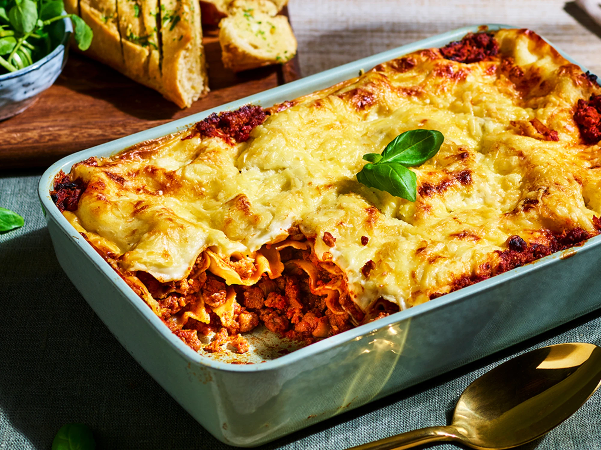

Lasagne

Recipe Description
Lasagne is an italian-international amazing dish famous all over the world. It's simple and an easy option for a dinner or lunch with friends.
Dish type: non-veg
Dish serving: warm temperature
Dish complexity: easy
Origin country: Italy
Ingredients
- 1kg shredded chicken breast
- 2 spoons of olive oil, plus a little for the dish
- 1kg minced beef
- 200g pack of ham
- tomato sauce
- 300g pack fresh lasagne sheets
- White sauce (Bechamél sauce)
- 125g ball mozzarella or shredded mozzarella
Steps
- Prepare the minced beef with the tomato sauce and reserve
- Prepare the white sauce and reserve
- start mounting the layers of the lasagne (minced meat/ham/lasagne sheets/white sauce - repeat until the end, when you cover with cheese
- Put the lasagne in the oven on 180C for 20 minutes
- it's ready!
Go back to homepage